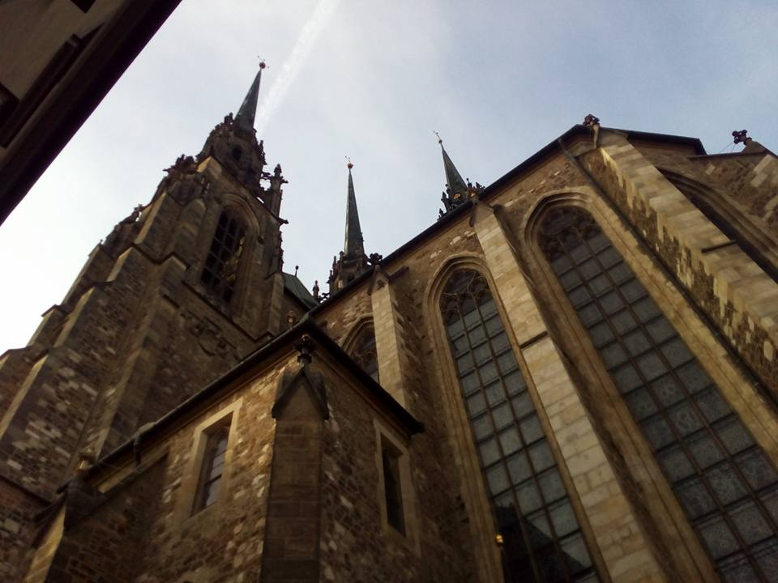

The 103
rd Peripatetic Seminar on Sheaves and Logic (PSSL 103) will be held on
April 6-8 at
Masaryk University, Brno (CZ). Following the tradition of the PSSL, this is intended to be an informal meeting, covering all areas of category theory and its applications.
Everybody is welcome to submit a proposal for a short seminar (approx 30 mins.); talks by PhD students and young researchers are particularly encouraged.

To register, submit a proposal, and for further information send an email to